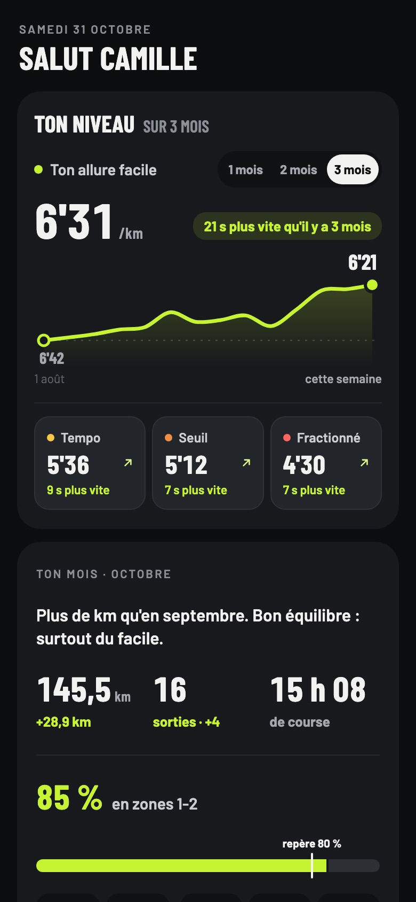
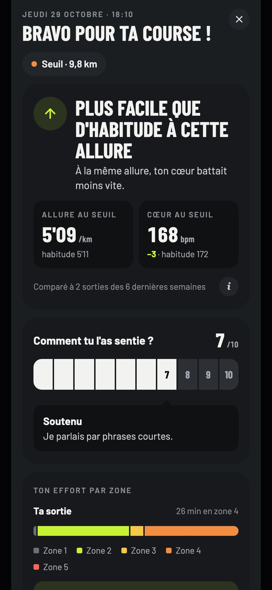
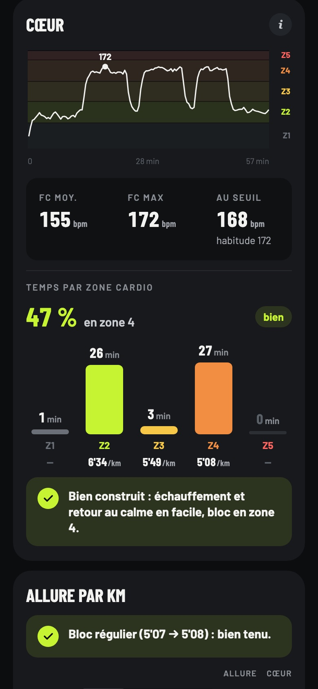

Vois enfin si tu progresses.
MyRunningApp lit tes sorties de course et te dit, après chacune, si elle était plus facile ou plus dure que d'habitude. Tes allures, ton cœur zone par zone, ta régularité : ta progression sur 3 à 12 mois, en un coup d'œil.
Ouvrir l'app
Sur iPhone, avec Apple Santé.



Comment ça marche
- Tu crées ton compteUn e-mail, un mot de passe, ton âge pour calculer tes zones cardio.
- Tu relies Apple SantéNotre petite app iPhone, RunSync, envoie tes courses toute seule : Apple Watch, iPhone ou toute montre reliée à Apple Santé.
- Tu coursTon bilan t'attend après chaque sortie, et ta progression se dessine semaine après semaine.
Tes données restent à toi
Tu es le seul à voir tes sorties. Elles servent uniquement à calculer ton bilan et ta progression, dans l'app.
Pas de publicitéPas de reventeExport et suppression à tout moment
Une question ?
MyRunningApp est en bêta, construite avec un petit groupe de coureurs. Écris-nous : get.myrunningapp@gmail.com